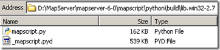

2011-07-24 22:40
admin
mapserver, programming, python
build, gdal, mapscript
building-mapserver-mapscript-on-windows
published
There are already Windows packages available for MapServer ready for deployment. However if you need to make a modification to the source files, apply a patch, or just want to see how MapServer is made then you can build MapServer from its C source files. Thanks to the ready made build kits this process should only take 10-15 minutes from start to finish.
Prerequisites: Microsoft Visual Studio with C++
1. Download the MapServer SDK (Software Development Kit) from http://www.gisinternals.com/sdk/. I’m using Visual Studio 2010, and building on a 32-bit Windows machine (still using XP..), so I’m using release-1600-dev
These build kits, provided by one of MapServer’s developers Tamas Szekeres, contain everything you need to compile both MapServer and GDAL. Checking out all the files from the MapServer SVN repository is not enough, as this does not contain the GDAL or RegEx dependencies (DLLs that MapServer depends on), or SWIG ?” a tool used to create MapScript files for each of the different scripting languages available in MapServer such as Python, Ruby, PHP, Perl etc.
2. Unzip the MapServer SDK on your hard-drive. Make a cup of tea as this takes awhile. In this example I’ve extracted the files to D:\MapServer. You should see a folder structure similar to below.
3. Open up a WIndows command prompt. Navigate to the folder you extracted the files. Now run the following command:
“C:\Program Files\Microsoft Visual Studio 10.0\VC\bin\vcvars32.bat”
This is a Windows batch file that sets up environment variables so you can use the MS Visual Studio tools in your current command session.
If this file is not present then make sure you have Microsoft Visual Studio C++ 2010 installed. You can check this in Add/Remove programs, or through the About menu in Visual Studio. It is not installed by default so you may have to go and find your installation disks or ISO.
4. The nmake tool is a Microsoft program that builds projects based on the contents of a Makefile. It’s the command line equivalent of pressing F5 in Visual Studio. You can look at the contents of the Makefile in a text editor ?” this is where all the hard work is done. Run the following command:
nmake ms
Sit back and watch the compilation! If you want to record what happened to a log file you can use the command:
nmake ms >> my_log.txt
After this build there should be a new folder D:\MapServer\release-1600\ containing all the files you need to deploy MapServer. When unzipped this folder already contained a build, but the timestamps for the DLLS should now be from a few minutes ago.
The Makefile D:\MapServer\Makefile contains details on how to build MapScript. The Makefile commands are great to follow if you want to just rebuild Python MapScript rather than the whole of MapServer. Just search for “ms-python” and you’ll see all the DOS commands you need to rebuild Python. You can then run these “by-hand” as shown below.
My original build produced MapScript for Python 2.6, but I also wanted to create a build for 2.7. To create a Python 2.7 compatible MapScript follow these steps:
1. Open the D:\MapServer\mapserver-6-0\mapscript\python\setup.py file in a Python editor such as IDLE. Change the library_dirs to read:
library_dirs = [‘../../’,’../../../release-1600/lib/’]
It should be possible to set these paths outside the setup.py on the command line, but I was not able to get this to work. This change adds in the folder containing all the .lib files that were created when we built MapServer. Check these files are present!
2. Navigate to the D:\MapServer\mapserver-6-0\mapscript\python directory.
Run the following commands (taken from the Makefile):
SET MSSdk=1 SET LIB=%LIB%;$D:\MapServer\release-1600\lib**
Run the following command:
python.exe setup.py build
You should now have two new files ?” mapscript.py and _mapscript.pyd (a .pyd file is a DLL with a couple of differences).
I took out all the twists, turns, and errors I encountered along the way to make the process appear simple, and me to appear to be an expert..however I ran into a myriad of problems, the error messages of which I’ve included below, along with how to fix them.
‘nmake’ is not recognized as an internal or external command, operable program or batch file.
Make sure you have run the “C:\Program Files\Microsoft Visual Studio
10.0\VC\bin\vcvars32.bat” file in your current Windows command session.
error: command ‘link.exe’ failed with exit status 1181*
You need to edit the setup.py file to include the folder with the .lib
files ?” see “Rebuilding MapScript step 2.” Also make sure you have built MapServer and the gd.lib file is in your D:\MapServer\release-1600\lib folder.
error: Unable to find vcvarsall.bat*
When building MapScript you need to set the correct environment
variables ?” see “Rebuilding MapScript step 3”
_mapscript.pyd.manifest : general error c1010070: Failed to load and parse the manifest. The system cannot find the file specified. error: command ‘mt.exe’ failed with exit status 31
Try cleaning the Python MapScript build folders with the following
command:
D:\MapServer\mapserver-6-0\mapscript\python>python.exe setup.py clean
{kind=link}
Comments🔗
1. geographika » Masquerades, Geocaching, and Easter Eggs **
[…] they aren’t as as much of a thrill to find as a mode staid GIS application. FME have the odd one-liner in their geo-processing output, and hopefully there are still a few treasures to be found, and a […]
ReplyAdd Comment